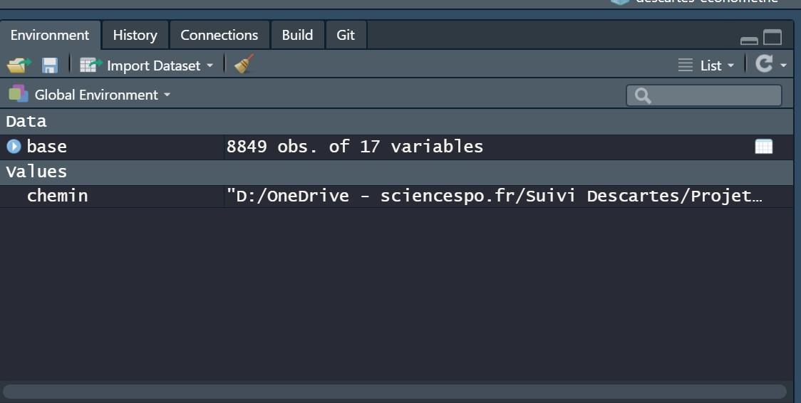
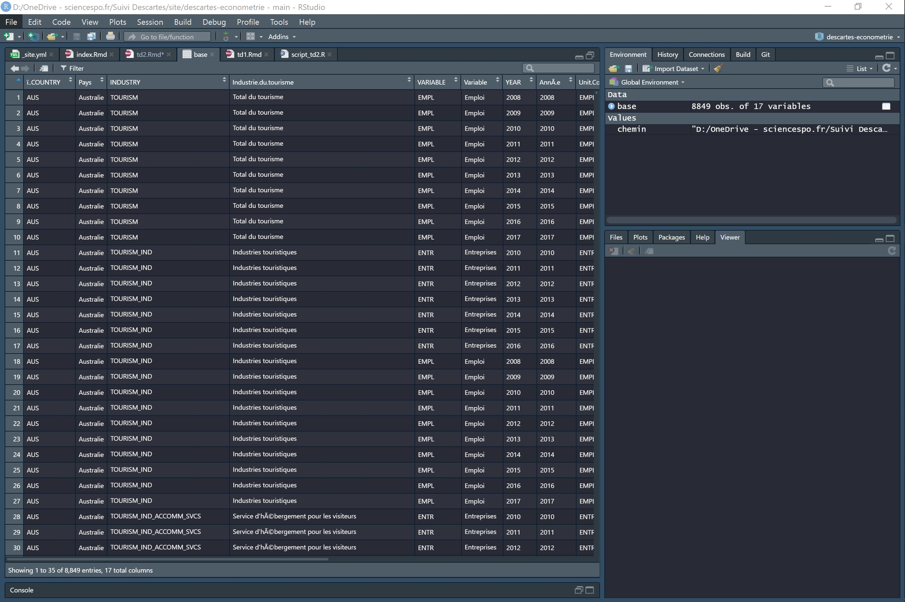
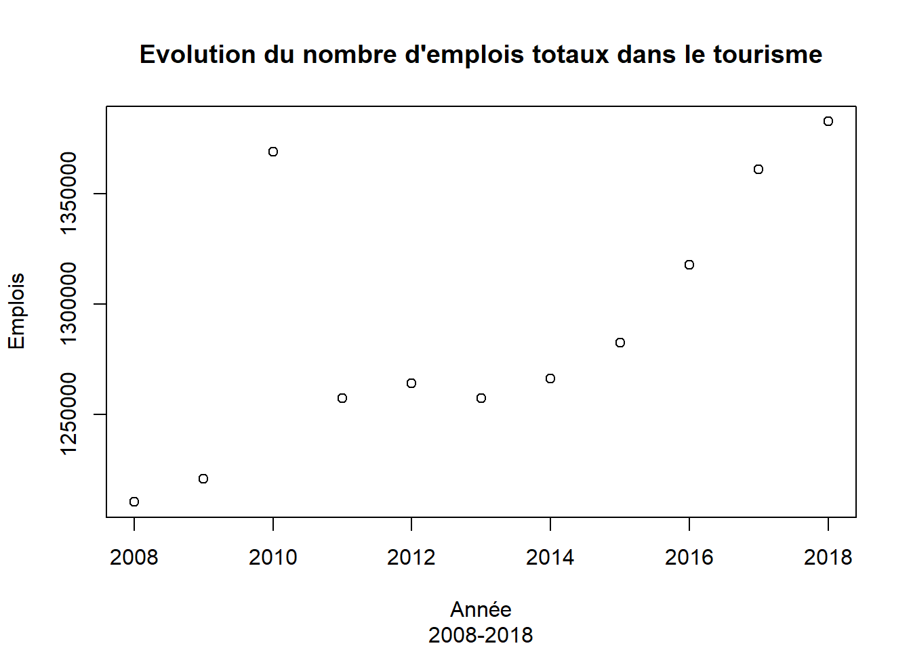
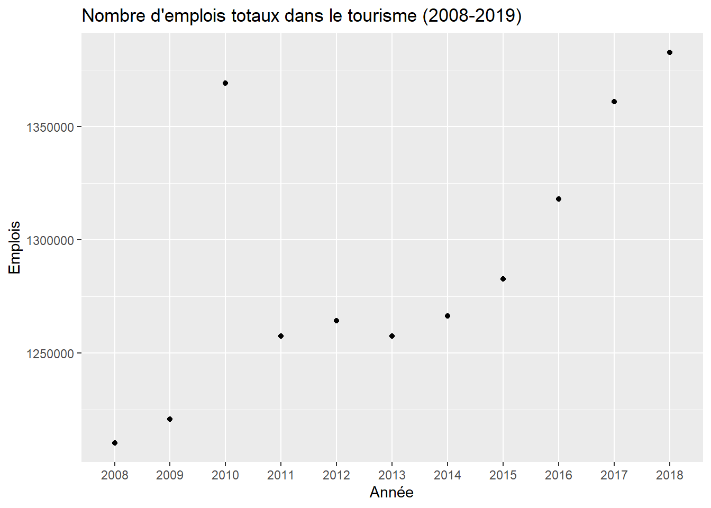
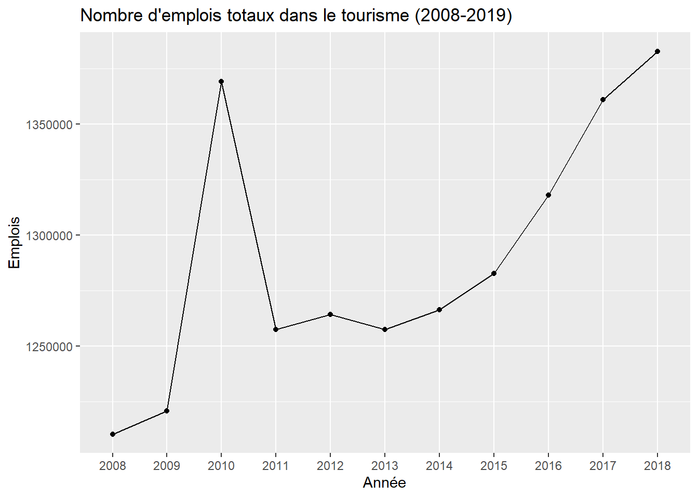
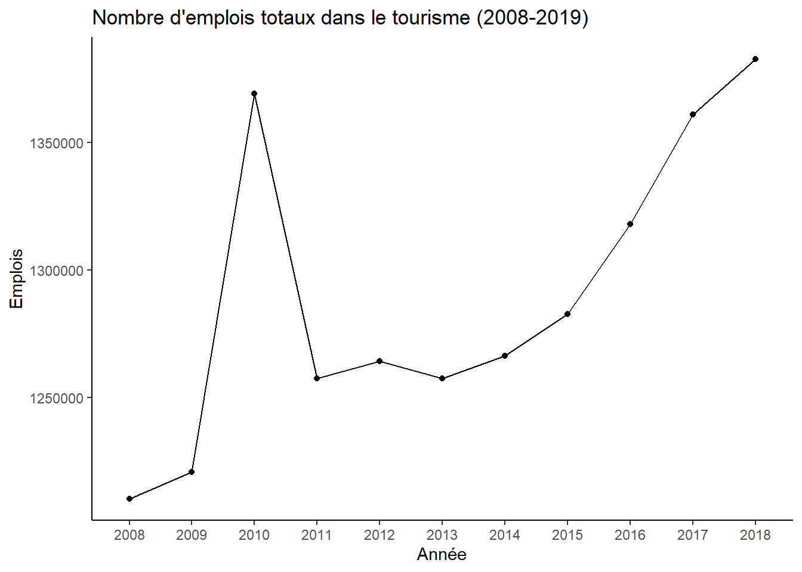
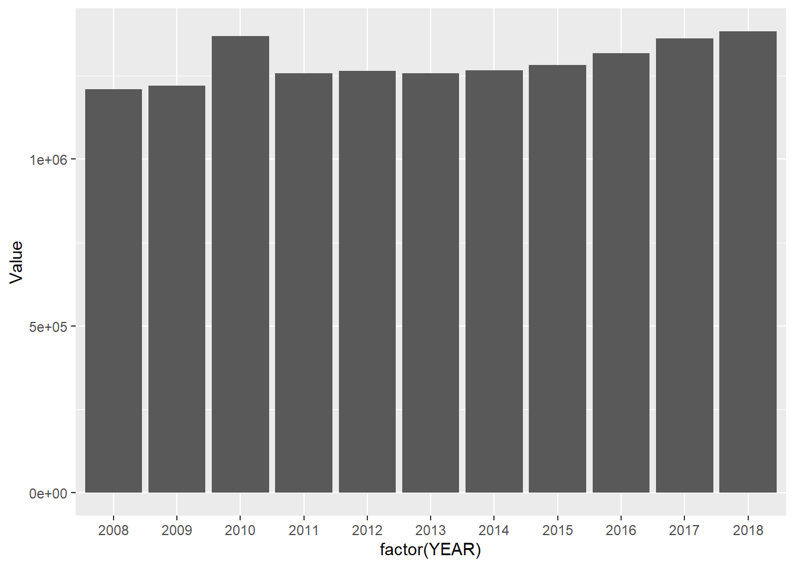
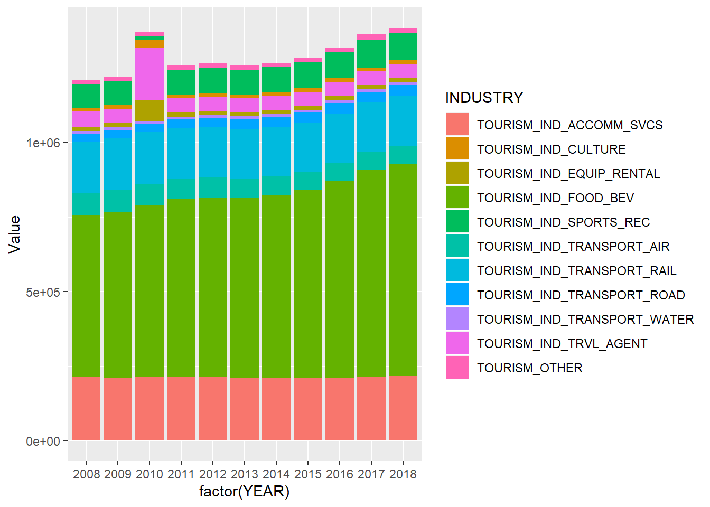

Cette semaine, nous allons utiliser une nouvelle base de données Tourisme Emploi trouvée sur le site de l’OCDE. Vous pouvez directement la télécharger dans la version que j’utilise en cliquant sur le lien ici..
Petite parenthèse. Je vous conseille de chercher les données directement via ce site de l’OCDE dont l’interface est moins jolie que celui vu la semaine dernière, mais qui est bien plus efficace pour accéder aux données rapidement via le menu de gauche :
Capture d’écran du site données
Enfin, je vous propose de retrouver le script de cette séance ici. Vous pouvez également télécharger directement la base de donnée du jour au format RDS, facilement compréhensible par R, au lien suivant.
Comme la semaine dernière, j’utilise le dossier de projet que j’ai créée. J’ai donc mis la base de données dans mon sous-dossier Projet/donnees/brut. Comme la semaine dernière, j’indique à R que ce sous-dossier est mon ‘working directory’.
Je vérifie ensuite qu’il a bien mis à jour le working directory:
## [1] "D:/OneDrive - sciencespo.fr/Suivi Descartes/Projet/donnees/brut"Ok on est tout bon, maintenant il ne nous reste plus qu’à charger la nouvelle base de données. Pour ce faire, j’indique simplement à R le nom du fichier dans la fonction read.csv :
# Chargement d'une base de donnée
base = read.csv(file = 'TOURISM_ENTR_EMPL_10102020213924949.csv')
# Impression des premières lignes pour vois si tout est bon
head(base)La base est chargée dans R ! On s’était arrêté à ça la semaine dernière, ce qui était un peu frustrant. Dans la prochaine section on va à présent aller plus loin.
La base est donc chargée dans notre environnement de travail:  La première chose que l’on a sans doute envie de faire c’est de voir à quoi cette base ressemble. Si l’on écrit dans la console le nom de base et que l’on éxecute la commande, la base de données s’imprime dans la console. Bon c’est un début, mais ce n’est pas très pratique.
C’est là que R Studio propose une fonctionnalité intéressante : ce logiciel nous offre la possibilité d’ouvrir la base dans une fenêtre séparée. Pour ce faire, deux options:
La base s’ouvre dans un nouvel onglet:  Comme vous pouvez le voir, on peut filtrer les informations contenu dans les colonnes et les classer par ordre ascendant on descendant.
De retour sur notre script R, on peut demander à la console de nous afficher le nom des colonnes de la base:
## [1] "ï..COUNTRY" "Pays" "INDUSTRY"
## [4] "Industrie.du.tourisme" "VARIABLE" "Variable"
## [7] "YEAR" "AnnÃ.e" "Unit.Code"
## [10] "Unit" "PowerCode.Code" "PowerCode"
## [13] "Reference.Period.Code" "Reference.Period" "Value"
## [16] "Flag.Codes" "Flags"Comme vous pouvez le voir, ces noms de colonne ne sont pas très élégants, nous verrons dans la section suivante comment les modifier pour rendre l’utilisation de la base plus plaisante.
Une commande qui est également utile est la fonction table() qui permet d’avoir accès au décompte des différentes valeurs que prend un variable. Par exemple, pour savoir quels sont les années que couvre la base - information contenu dans la variable YEAR - on écrit:
# Informatoions sur le nombre de valeurs par colonne
table(base$YEAR) # années contenues dans la base##
## 2008 2009 2010 2011 2012 2013 2014 2015 2016 2017 2018
## 767 844 836 841 865 858 872 882 838 827 419Dans la console s’imprime la table des résultats. La base contient 767 observations pour l’année 2008 et 419 pour l’année 2018.
Vous avez remarqué un truc bizarre avec le $ ? En effet, pour signaler à R que je ne veux des informations que sur la colonne YEAR de la base il faut que j’utilise le signe dollar entre le nom de la base et le nom de la variable. Cela s’applique dès que j’applique des fonctions à une colonne.
Ainsi, pour obtenir un tableau du nombre d’observation par indicateur - information contenue dans la variable VARIABLE - j’exécute la commande suivante :
##
## EMPL ENTR
## 4691 4158Ici, R nous délivre l’information suivante : la base contient 4 691 observations sur l’indicateur du nombre d’emplois et 4 158 observations sur l’indicateur du nombre d’entreprises.
Avant de continuer, je dois vous signaler qu’il est possible d’indiquer à R que vous souhaitez effectuer des opérations sur une colonne de deux façons:
Pas mal de possibilités, donc, pour aboutir au même résultat. Je vous conseille tout de même d’utiliser le signe dollar, cela rend votre script plus lisible.
Ok, vous avez compris comment la fonction table fonctionne et comment on l’éxecute sur une colonne particulière. On peut aussi l’utiliser pour faire une table croisée du décompte des observations par rapport à deux variables. Ici on cherche à s’avoir combien la base contient d’observation par indicateur par année :
##
## EMPL ENTR
## 2008 409 358
## 2009 446 398
## 2010 435 401
## 2011 439 402
## 2012 463 402
## 2013 460 398
## 2014 466 406
## 2015 480 402
## 2016 433 405
## 2017 431 396
## 2018 229 190Finalement, on peut regarder quelles valeurs prennent les variables Pays et Industrie.du.tourisme afin de mieux comprendre notre base :
##
## Autres industries
## 157
## Autres industries caractéristiques du tourisme spécifiques au pays considéré
## 165
## Commerce de détail de produits caractéristiques du tourisme spécifiques au pays considéré
## 131
## Hôtels et établissements assimilés
## 573
## Industrie de services de restauration et de consommation de boissons
## 822
## Industrie des activités culturelles
## 518
## Industrie des activités sportives et de loisirs
## 542
## Industrie des agences de voyages et des autres services de réservation
## 857
## Industries touristiques
## 831
## Location d'équipement de transport
## 479
## Service d'hébergement pour les visiteurs
## 799
## Services liés au transport de voyageurs
## 223
## Total du tourisme
## 175
## Transport aérien de voyageurs
## 513
## Transport de voyageurs
## 599
## Transport par chemin de fer de voyageurs
## 444
## Transport par eau de voyageurs
## 485
## Transport routier de voyageurs
## 536##
## Égypte États-Unis
## 117 259
## Afrique du Sud Allemagne
## 273 141
## Argentine Australie
## 40 217
## Autriche Belgique
## 128 11
## Brésil Bulgarie
## 200 38
## Canada Chili
## 154 320
## Chine (République populaire de) Colombie
## 20 143
## Corée Costa Rica
## 120 131
## Croatie Danemark
## 129 248
## Espagne Estonie
## 297 60
## Finlande Flandres
## 242 11
## France Grèce
## 289 95
## Hongrie Inde
## 287 29
## Indonésie Irlande
## 24 100
## Islande Israël
## 253 154
## Italie Japon
## 48 134
## Kazakhstan Lettonie
## 286 247
## Lituanie Luxembourg
## 270 44
## Malte Maroc
## 259 98
## Mexique Norvège
## 220 228
## Nouvelle-Zélande Pérou
## 154 113
## Pays-Bas Philippines
## 37 69
## Pologne Portugal
## 66 159
## Région de Bruxelles-Capitale République slovaque
## 11 144
## République tchèque Roumanie
## 170 264
## Royaume-Uni Russie
## 280 134
## Serbie Slovénie
## 80 308
## Suède Suisse
## 119 204
## Turquie Wallonie
## 162 11Dans la prochaine section, nous allons voir comment modifier la base de données.
Pour modifier votre base de données, je vais vous présenter un package qui fait la magie de R: dplyr. Cette librairie, dont vous pouvez trouver un guide d’utilisation plus que complet ici, vous permet de modifier votre base de donnée à votre convenance tout en rendant lisible vos manipulations à travers une grammaire simple.
Première étape, l’installation de la librairie. Pour ce faire, il faut utiliser la commande install.packages() et placer le nom du package d’intérêt entre guillemets entre les parenthèses de la fonction. Vous éxecutez et R s’occupe du reste: il télécharge et intalle la librairie pour vous.
Une fois que cela est fait, il faut dire à R que l’on souhaite activer le package pour pouvoir l’utiliser. Pour cela, on utilise la fonction library() et l’on place le nom du package sans guillemet entre les parenthèses. On exécute. Le package peut à présent être utilisé, ce qui nous permet d’accéder à toutes ses fonctions.
##
## Attaching package: 'dplyr'## The following objects are masked from 'package:stats':
##
## filter, lag## The following objects are masked from 'package:base':
##
## intersect, setdiff, setequal, unionAvant de commencer les modifications de notre base, j’aimerais souligner l’importance de bien charger vos packages à chaque fois que vous réouvrez R. À l’ouverture, R ne charge que les packages de base du langage. Il faut donc systématiquement lui rappeler de charger les packages qui vous intéressent lorsque vous le redémarrez. Pour ne pas oublier de le faire, je vous conseille de placer vos chargements de package en haut du script systématiquement.
Nous allons à présent procéder à des modifications de la base. On va tout d’abord modifier le nom d’une colonne, car certaines d’entre elles ont un nom bizarre.
Je me remémore du nom des colonnes en demandant à R de me les imprimer de nouveau :
## [1] "ï..COUNTRY" "Pays" "INDUSTRY"
## [4] "Industrie.du.tourisme" "VARIABLE" "Variable"
## [7] "YEAR" "AnnÃ.e" "Unit.Code"
## [10] "Unit" "PowerCode.Code" "PowerCode"
## [13] "Reference.Period.Code" "Reference.Period" "Value"
## [16] "Flag.Codes" "Flags"Bon, on va modifier le nom de la première colonne, car la variable “ï..COUNTRY” ne va pas être très pratique à utiliser avec cette dénomination.
Pour ce faire, je vais utiliser la fonction rename() du package dplyr :
Ok, on va décortiquer ce qu’il se passe dans cette ligne étape par étape :
Vérifions si tout a bien fonctionné en demandant à R de nous imprimer le nom des colonnes de la base_propre à laquelle j’ai assigné les modifications:
## [1] "PAYS" "Pays" "INDUSTRY"
## [4] "Industrie.du.tourisme" "VARIABLE" "Variable"
## [7] "YEAR" "AnnÃ.e" "Unit.Code"
## [10] "Unit" "PowerCode.Code" "PowerCode"
## [13] "Reference.Period.Code" "Reference.Period" "Value"
## [16] "Flag.Codes" "Flags"Succès !
On va à présent repartir de la base_propre que l’on vient de créer et ne conserver que les informations pour la France.
Petit rappel d’abord sur le nom exact de la valeur “France” dans la base:
##
## Égypte États-Unis
## 117 259
## Afrique du Sud Allemagne
## 273 141
## Argentine Australie
## 40 217
## Autriche Belgique
## 128 11
## Brésil Bulgarie
## 200 38
## Canada Chili
## 154 320
## Chine (République populaire de) Colombie
## 20 143
## Corée Costa Rica
## 120 131
## Croatie Danemark
## 129 248
## Espagne Estonie
## 297 60
## Finlande Flandres
## 242 11
## France Grèce
## 289 95
## Hongrie Inde
## 287 29
## Indonésie Irlande
## 24 100
## Islande Israël
## 253 154
## Italie Japon
## 48 134
## Kazakhstan Lettonie
## 286 247
## Lituanie Luxembourg
## 270 44
## Malte Maroc
## 259 98
## Mexique Norvège
## 220 228
## Nouvelle-Zélande Pérou
## 154 113
## Pays-Bas Philippines
## 37 69
## Pologne Portugal
## 66 159
## Région de Bruxelles-Capitale République slovaque
## 11 144
## République tchèque Roumanie
## 170 264
## Royaume-Uni Russie
## 280 134
## Serbie Slovénie
## 80 308
## Suède Suisse
## 119 204
## Turquie Wallonie
## 162 11La commande ci-dessus me permet d’être certains de la manière donc la valeur “France” est écrite dans la base. Si je n’utilise pas cette valeure précise, alors je ne vais pas pouvoir filtrer de donnée.
Pour filtrer les données, on va utiliser la fonction filter() de dplyr. Cette-ci fonctionne à partir de “tests”. C’est-à-dire qu’on lui demande de vérifier une condition et la fonction ne conservera à la fin que les valeurs pour laquelle cette condition est remplie. Par exemple pour ne conserver que les données pour lesquels la variable Pays prend la valeur “France” on écrit:
Petit zoom sur ce qu’il se passe ici:
On vérifie si notre filtre a bien été appliqué en regardant quelles valeurs prend la variable Pays de la base base_france que l’on vient de créer:
##
## Égypte États-Unis
## 0 0
## Afrique du Sud Allemagne
## 0 0
## Argentine Australie
## 0 0
## Autriche Belgique
## 0 0
## Brésil Bulgarie
## 0 0
## Canada Chili
## 0 0
## Chine (République populaire de) Colombie
## 0 0
## Corée Costa Rica
## 0 0
## Croatie Danemark
## 0 0
## Espagne Estonie
## 0 0
## Finlande Flandres
## 0 0
## France Grèce
## 289 0
## Hongrie Inde
## 0 0
## Indonésie Irlande
## 0 0
## Islande Israël
## 0 0
## Italie Japon
## 0 0
## Kazakhstan Lettonie
## 0 0
## Lituanie Luxembourg
## 0 0
## Malte Maroc
## 0 0
## Mexique Norvège
## 0 0
## Nouvelle-Zélande Pérou
## 0 0
## Pays-Bas Philippines
## 0 0
## Pologne Portugal
## 0 0
## Région de Bruxelles-Capitale République slovaque
## 0 0
## République tchèque Roumanie
## 0 0
## Royaume-Uni Russie
## 0 0
## Serbie Slovénie
## 0 0
## Suède Suisse
## 0 0
## Turquie Wallonie
## 0 0De la même manière, je filtre les données de la base que je vient de créer pour ne conserver que les données concernant l’emploi (j’enlève les données qui concernent le nombre d’entreprises) :
##
## EMPL ENTR
## 4691 4158Je vous propose de découvrir à présent un type d’opération qui est important. La fonction select() de dplyr vous permet de sélectionner les colonnes que vous souhaitez conserver.
Première étape, je me remémore le nom des colonnes de ma base :
## [1] "PAYS" "Pays" "INDUSTRY"
## [4] "Industrie.du.tourisme" "VARIABLE" "Variable"
## [7] "YEAR" "AnnÃ.e" "Unit.Code"
## [10] "Unit" "PowerCode.Code" "PowerCode"
## [13] "Reference.Period.Code" "Reference.Period" "Value"
## [16] "Flag.Codes" "Flags"Je ne souhaite conserver que les colonnes “INDUSTRY”, “Industrie.du.tourisme”, “YEAR” et “Value”. Pour ce faire, j’utilise la fonction select() :
Comme pour les deux fonctions présentées ci-dessus, la flèche et la “pipe” sont de la partie. Dans la fonction select() j’écris simplement le nom des colonnes.
## [1] "INDUSTRY" "Industrie.du.tourisme" "YEAR"
## [4] "Value"Finalement, une fonction assez pratique de dplyr vous permet de modifier ou de créer une colonne. Il s’agit de la fonction mutate().
Admettons par exemple que je souhaite créer des colonnes qui ne prennent les valeurs maximum, minimum et moyenne d’emploi, alors j’écris:
base_france <- base_france %>%
mutate(mean_emploi = mean(Value, na.rm=T),
max_emploi = max(Value, na.rm=T),
min_emploi = min(Value, na.rm=T))Dans la même idée, je peux créer une variable qui prendra pour valeur la moyenne du nombre d’emploi moyens par année. Pour se faire, je vais ajouter une ligne de commande avant d’éxecuter mutate() et je vais indiquer à R qu’il doit grouper ses modifications par rapport à la variable “YEAR”. Cette fonction de groupement s’appelle group_by() :
Pour utiliser group_by() j’indique simplement entre les parenthèses le nom de la ou des variables de groupement.
Voici quelques bases d’utilisation de dplyr. Je vous invite fortement à en apprendre d’avantage de votre côté, et notamment en utilisant cette excellente ressource,.
Ok, on a modifié notre base de donnée afin de créer une plus petit base de données avec uniquement des informations sur l’emploi touristique en France.
Nous allons à présent voir brièvement comment obtenir des statistiques descriptives de ces données d’emploi. Nous avons déjà vu les fonctions mean(), max() et min() dans la section précédente. Nous pouvons les réutiliser hors de la fonction mutate pour obtenir des données sur un colonne :
## [1] 286882.3## [1] 9317## [1] 1382831Une manière plus rapide d’obtenir cette information est d’utiliser la fonction summary() :
## Min. 1st Qu. Median Mean 3rd Qu. Max.
## 9317 15697 84673 286882 271747 1382831Si vous souhaitez obtenir la variance ou l’écart-type, des fonctions existent également:
## [1] 420909.5## [1] 177164831577Notez au passage que vous pouvez tester l’égalité entre deux valeurs:
## [1] FALSE## [1] TRUEOn peut également être intéressé de n’obtenir ces informations que pour une branche particulière du tourisme. Dans ce cas, on peut soit filtrer la base en utilisant la fonction filter() du packages dplyr tel que nous l’avons vu précédement, soit en utilisant une fonctionnalité intégrée à R. Je m’explique. Comme avec filter() on va utiliser les conditions pour filtrer un sous-ensemble de la base. Je regarde d’abord quels sont les valeurs possibles pour les branches de l’industrie du tourisme:
##
## Autres industries
## 11
## Autres industries caractéristiques du tourisme spécifiques au pays considéré
## 0
## Commerce de détail de produits caractéristiques du tourisme spécifiques au pays considéré
## 0
## Hôtels et établissements assimilés
## 11
## Industrie de services de restauration et de consommation de boissons
## 11
## Industrie des activités culturelles
## 11
## Industrie des activités sportives et de loisirs
## 11
## Industrie des agences de voyages et des autres services de réservation
## 11
## Industries touristiques
## 11
## Location d'équipement de transport
## 11
## Service d'hébergement pour les visiteurs
## 11
## Services liés au transport de voyageurs
## 0
## Total du tourisme
## 11
## Transport aérien de voyageurs
## 11
## Transport de voyageurs
## 11
## Transport par chemin de fer de voyageurs
## 11
## Transport par eau de voyageurs
## 11
## Transport routier de voyageurs
## 11Je vais m’intéresser aux chiffres du Total du tourisme. Pour obtenir la moyenne du nombre d’emplois, j’exécute:
## [1] 1290079Que se passe-t-il dans cette ligne ?
De la même façon, on peut obtenir :
## [1] 59342.3## [1] 1382831## [1] 1210438Et si l’on veut l’ensemble de ces informations d’un coup, alors la fonction summary() fait son grand retour :
## Min. 1st Qu. Median Mean 3rd Qu. Max.
## 1210438 1257560 1266421 1290080 1339513 1382831Si à présent je souhaite connaître l’année pour laquelle le nombre d’employés totaux du tourisme a été le minimum, comment faire ?
La condition que l’on va tester est la suivante : la valeur d’emploi doit être le minimum sur tout la série. Cette valeur minimale on peut l’enregistrer dans un premier objet :
Ensuite on veut l’année qui correspond à cette valeur, alors on va simplement sélectionner le sous-ensemble d’année(s) pour laquelle ou lesquelles le nombre d’employés totaux du tourisme prend cette valeur minimale.
On exécute la commande suivante :
## [1] 2008On peut procéder de la même manière, en une ligne, pour obtenir l’année qui a connu le plus grand nombre d’employés du tourisme :
year_max = base_france$YEAR[base_france$Value == max(base_france$Value[base_france$Industrie.du.tourisme=='Total du tourisme'])]
print(year_max)## [1] 2018Vous avez maintenant tous les outils pour analyser votre base de données. Tous les outils, ou presque, car parfois, un graph vaut mieux que mille mesures dans un tableau pour la compréhension de vos lecteurs. Dans la prochaine section j’ai donc le plaisir de vous présenter le fonctionnement des graphs sur R.
C’est la dernière étape de notre TD du jour. La partie la plus intéressante, car vous pourrez à la fin obtenir de beaux graphs colorés qui rendront vos rapports plus agréables à lire.
Accrochez vous pour cette dernière ligne droite car les choses se compliquent légèrement.
La première étape de cette présentation des graphs et de vous montrer la fonction basique intégrée à R vous permettant d’en faire. Ici, je vais réaliser un graphique de points dont les répères sont l’année en abcisse (x) et le nombre d’emplois en ordonnée (y).
plot(x = base_france$YEAR[base_france$Industrie.du.tourisme=='Total du tourisme'],
y = base_france$Value[base_france$Industrie.du.tourisme=='Total du tourisme'],
xlab='Année', ylab='Emplois', main="Evolution du nombre d'emplois totaux dans le tourisme",
sub='2008-2018')
Comme vous pouvez le lire, cette fonction me permet de choisir :
Pour plus d’options vous pouvez utiliser le classique :
D’autres fonctions basiques existent comme hist() ou barplot(), qui reprennent le même type de fonctionnement que plot().
J’aimerais maintenant vous présenter un des joyaux de la famille des packages de R. La librairie ggplot2. Elle vous permettra de personnaliser vos graphs presque à l’infini, et ce de manière relativement facile. L’excellente ressource écrite par Julien Barnier vous offrira un tour d’horizon plus que complet de ces possibilités, que je ne pourrai égaler dans cette courte introduction.
Nous allons donc commencer par installer la librairie et intialiser le package :
Nous somme à présent prêts pour réaliser notre premier graph. Pour refaire le graph que nous avons réalisé juste avant en utilisant plot(), il nous faut les lignes suivantes :
ggplot(data = base_france[base_france$Industrie.du.tourisme=='Total du tourisme',],
aes(x=factor(YEAR), y =Value))+
geom_point() +
labs(x='Année',
y='Emplois',
title = "Nombre d'emplois totaux dans le tourisme (2008-2019)")
Décortiquons à présent ce code:
Bon jusqu’ici vous ne devez pas nécessairement trouver que ce package soit plus intéressant que la fonction basique intégrée à R. Laissez-moi vous montrer comment il est facile d’ajouter une ligne qui reliera les différents points que vous voyez tracés à l’écran. Il vous suffit d’ajouter geom_line() à votre code.
ggplot(data = base_france[base_france$Industrie.du.tourisme=='Total du tourisme',],
aes(x=factor(YEAR), y =Value))+
geom_point() +
geom_line(group=1) +
labs(x='Année',
y='Emplois',
title = "Nombre d'emplois totaux dans le tourisme (2008-2019)")
Vous pouvez également personnaliser le thème de votre gaph, afin notamment d’enlever ce fond gris un peu ideux en ajoutant theme_classic() à votre graph par exemple:
ggplot(data = base_france[base_france$Industrie.du.tourisme=='Total du tourisme',],
aes(x=factor(YEAR), y =Value))+
geom_point() +
geom_line(group=1) +
labs(x='Année',
y='Emplois',
title = "Nombre d'emplois totaux dans le tourisme (2008-2019)")+
theme_classic()
Pour finir cette séance, voici un autre type de graph que l’on peut réaliser avec ggplot. À présent, je vais créer un graph à barres, dont la taille de la barre équivaut au nombre d’emplois totaux par année. De plus, je vais utiliser le paramètre fill dans la sous fonction aes de la fonction ggplot pour faire en sorte que chaque barre soit divisée en sous-régions dont la taille sera proportionnelle au nombres d’emplois par branche.
Première étape, je modifie la base de donnée pour enlever toutes les catégories qui représentent des aggrégats des différentes branches:
base_france2 <- base_france %>%
filter(INDUSTRY != "TOURISM",
INDUSTRY!='TOURISM_IND',
INDUSTRY !='TOURISM_IND_TRANSPORT',
INDUSTRY != 'TOURISM_IND_ACCOMM_SVCS_HOTELS')Je réalise à présent un premier graph en utilisant geom_col(). Ce premier graph présente le nombre total d’emplois du tourisme par année.

À présent, je vais vous montrer comment en assignant au paramètre fill de l’aes() le nom de la variable des différentes branches, j’obtiens une découpe de chaque barre en sous-région dont la hauteur est proportionnelle au nombres d’employés concernés :

Voilà pour la présentation des différentes fonctions aujourd’hui.
Vous avez à présent toutes les bases pour commencer l’analyse de votre base de données. N’hésitez pas à m’intérroger et à me demander d’avantages de précisions si des doutes subsistent.